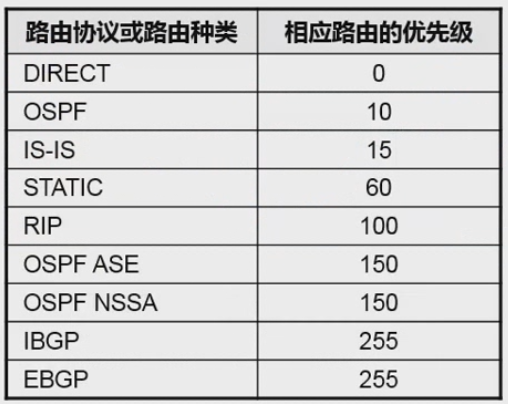
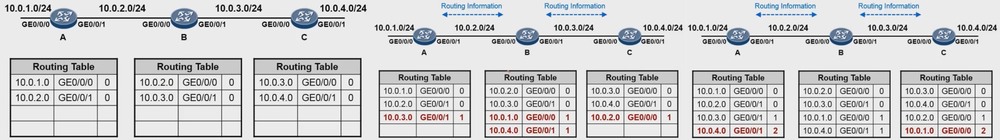

计算机网络 - 网络层
概述
因为网络层是整个互联网的核心，因此应当让网络层尽可能简单。网络层向上只提供简单灵活的、无连接的、尽最大努力交付的 数据报服务。
使用 IP 协议，可以把异构的物理网络连接起来，使得在网络层看起来好像是一个统一的网络。

与 IP 协议配套使用的还有三个协议：
- 地址解析协议 ARP（Address Resolution Protocol）
- 网际控制报文协议 ICMP（Internet Control Message Protocol）
- 网际组管理协议 IGMP（Internet Group Management Protocol）
IP 数据报格式

- 版本：有 4（IPv4）和 6（IPv6）两个值；
- 首部长度：占 4 位，因此最大值为 15。值为 1 表示的是 1 个 32 位字的长度，也就是 4 字节。因为固定部分长度为 20 字节，因此该值最小为 5。如果可选字段的长度不是 4 字节的整数倍，就用尾部的填充部分来填充。
- 区分服务：用来获得更好的服务，可以理解为赋予报文不同优先级的一个字段，一般情况下不使用。
- 总长度：包括首部长度和数据部分长度。
- 生存时间 TTL：它的存在是为了防止无法交付的数据报在互联网中不断兜圈子。以路由器跳数为单位，当 TTL 减为 0 时就丢弃数据报。
- 协议：指出携带的数据应该上交给哪个协议进行处理，例如 ICMP、TCP、UDP 等。
- 首部检验和 ：因为数据报 每经过一个路由器，都要重新计算检验和 ，因此检验和计算 不包含数据部分，以减少计算的工作量。
- 唯一标识 ID：不同数据报具有不同的唯一标识。在数据报长度过长从而发生分片的情况下，相同数据报的不同分片具有相同的标识符。
- 片偏移：和标识符一起，用于发生分片的情况。片偏移的单位为 8 字节。
- 分片标志位 Flags：包括不分片（DF）和更多片（MF）标志位。

IP 数据报发生分片后，不同分片的首部中，唯一标识字段相同、片偏移字段不同、首部校验和不同；DF 标志位通常是相同的，而 MF 标志位则用于指示是否还有后续片。
IP 地址编址方式
IP 地址的编址方式经历了三个历史阶段：分类、子网划分、无分类。
1. 分类
由两部分组成，网络号（Network ID）和主机号（Host ID），其中 不同分类具有不同的网络号长度，并且是固定的。
IP 地址 ::= {< 网络号 >, < 主机号 >}

2. 子网划分
通过 在主机号字段中拿一部分作为子网号，把两级 IP 地址划分为三级 IP 地址。
IP 地址 ::= {< 网络号 >, < 子网号 >, < 主机号 >}
要使用子网，必须配置子网掩码。一个 B 类地址的默认子网掩码为 255.255.0.0，如果 B 类地址的子网占两个比特，那么子网掩码为 11111111 11111111 11000000 00000000，也就是 255.255.192.0。
注意，外部网络看不到子网的存在。
3. 无分类
无分类编址（Classless Inter-Domain Routing, CIDR）消除了传统 A 类、B 类和 C 类地址以及划分子网的概念，使用网络前缀和主机号来对 IP 地址进行编码，网络前缀的长度可以根据需要变化。
IP 地址 ::= {< 网络前缀号 >, < 主机号 >}
CIDR 的记法上采用在 IP 地址后面加上网络前缀长度的方法，例如 128.14.35.7/20 表示前 20 位为网络前缀（子网掩码长度为 20）。
CIDR 的地址掩码可以继续称为子网掩码，网络前缀的长度等于子网掩码的首位连续为 1 的长度。
一个 CIDR 地址块中有很多地址，一个 CIDR 表示的网络就可以表示原来的很多个网络，并且在路由表中只需要一个路由就可以代替原来的多个路由，减少了路由表项的数量。把这种通过使用网络前缀来减少路由表项的方式称为 路由聚合，也称为构成超网。
在路由表中的项目由“网络前缀”和“下一跳地址”组成，在查找时可能会得到不止一个匹配结果，应当 采用最长前缀匹配原则 来确定应该匹配哪一个。
1 | [RTA]display ip routing-table |
地址解析协议 ARP
网络层实现主机之间的通信，而链路层实现具体每段链路之间的通信。因此 在通信过程中，IP 数据报的源地址和目的地址始终不变，而 MAC 地址随着链路的改变而改变。

ARP 协议用于将 IP 地址映射到对应的 MAC 地址。

ICMP 和 IGMP 属于网络层，但是作为 IP 数据报的数据部分存在。因此图中画在了 IP 之外。
每个主机都有一个 ARP 高速缓存，里面有本局域网上的各主机和路由器的 IP 地址到 MAC 地址的映射表。
1 | <RTA>display arp |
如果主机 A 知道主机 B 的 IP 地址，但是 ARP 高速缓存中没有该 IP 地址到 MAC 地址的映射，此时 主机 A 通过广播的方式发送 ARP 请求分组，主机 B 收到该请求后会发送 ARP 响应分组给主机 A 告知其 MAC 地址，随后主机 A 向其高速缓存中写入主机 B 的 IP 地址到 MAC 地址的映射。

网际控制报文协议 ICMP
ICMP 用于在 IP 网络中传送控制信息和错误消息，它 通常用于网络设备之间进行通信，以诊断网络问题和报告错误。
ICMP 是为了更有效地转发 IP 数据报和提高交付成功的机会。ICMP 封装在 IP 数据报中（作为数据部分），但是不属于高层协议，而是一种在 IP 层之上的协议。

ICMP 报文分为差错报告报文和询问报文，通常是 由网络设备生成并发送。

1. Ping
Ping 是 ICMP 的一个重要应用，主要 用来测试两台主机之间的连通性。
Ping 的原理是通过向目的主机发送 ICMP Echo 请求报文，目的主机收到之后会发送 Echo 回答报文。Ping 会根据时间和成功响应的次数估算出数据包往返时间以及丢包率。
2. Traceroute
Traceroute 是 ICMP 的另一个应用，用来跟踪一个分组从源点到终点的路径。
Traceroute 发送的 IP 数据报封装的是无法交付的 UDP 用户数据报，并由目的主机发送终点不可达差错报告报文。
- 源主机向目的主机发送一连串的 IP 数据报。第一个数据报 P1 的生存时间 TTL 设置为 1，当 P1 到达路径上的第一个路由器 R1 时，R1 收下它并把 TTL 减 1，此时 TTL 等于 0，R1 就把 P1 丢弃，并 向源主机发送一个 ICMP 时间超过差错报告报文；
- 源主机接着发送第二个数据报 P2，并把 TTL 设置为 2。P2 先到达 R1，R1 收下后把 TTL 减 1 再转发给 R2，R2 收下后也把 TTL 减 1，由于此时 TTL 等于 0，R2 就丢弃 P2，并 向源主机发送一个 ICMP 时间超过差错报告报文；
- 不断执行这样的步骤，直到最后一个数据报刚刚到达目的主机，主机不转发数据报，也不把 TTL 值减 1。但是因为数据报封装的是无法交付的 UDP，目的主机要 向源主机发送 ICMP 终点不可达差错报告报文。
- 之后源主机知道了到达目的主机所经过的路由器 IP 地址以及到达每个路由器的往返时间。
虚拟专用网 VPN
由于 IP 地址的紧缺，一个 机构能申请到的 IP 地址数往往 远小于 本机构所拥有的主机数。并且一个机构并不需要把所有的主机接入到外部的互联网中，机构内的计算机可以使用仅在本机构有效的 IP 地址（专用地址）。
有三个专用地址块：
- 10.0.0.0 ~ 10.255.255.255
- 172.16.0.0 ~ 172.31.255.255
- 192.168.0.0 ~ 192.168.255.255
VPN 使用公用的互联网作为 本机构各专用网之间的 通信载体。“专用”指机构内的主机只与本机构内的其它主机通信；“虚拟”指好像是、而实际上并不是，它有经过公用的互联网。
下图中，场所 A 和 B 的通信经过互联网，如果场所 A 的主机 X 要和另一个场所 B 的主机 Y 通信，IP 数据报的源地址是 10.1.0.1，目的地址是 10.2.0.3。IP 数据报先发送到与互联网相连的路由器 R1，R1 对内部数据进行加密，然后重新加上数据报的首部，源地址是路由器 R1 的全球地址 125.1.2.3，目的地址是路由器 R2 的全球地址 194.4.5.6。路由器 R2 收到数据报后将数据部分进行解密，恢复原来的数据报，此时目的地址为 10.2.0.3，就交付给 Y。

网络地址转换 NAT
专用网内部的主机使用本地 IP 地址，但又想和互联网上的主机通信时，可以使用 NAT 来将本地 IP 转换为全球 IP。
在以前，NAT 将本地 IP 和全球 IP 一一对应，这种方式下拥有 n 个全球 IP 地址的专用网内最多只可以同时有 n 台主机接入互联网。为了更有效地利用全球 IP 地址，现在常用的 NAT 转换表把传输层的端口号也用上了，使得多个专用网内部的主机共用一个全球 IP 地址 。使用端口号的 NAT 也叫做 网络地址与端口转换 NAPT。

路由器的结构
路由器从功能上可以划分为：路由选择和分组转发。路由选择是指路由器根据网络中各设备之间的通信需求，选择最佳的传输路径进行数据转发；而分组转发则是指路由器将收到的数据包按照特定的规则进行处理和转发。
分组转发结构由三个部分组成：交换结构、一组输入端口和一组输出端口。

交换结构是指路由器内部用于处理和转发数据包的组件，通常包括转发表、邻接表、缓存等。
路由器分组转发流程
从数据报的首部提取目的主机的 IP 地址 D，得到目的网络地址 N：
- 若 N 就是与此路由器 直接相连 的某个网络地址，则进行直接交付；
- 若路由表中有 目的地址 为 D 的特定主机路由，则把数据报传送给表中所指明的下一跳路由器；
- 若路由表中有到达 网络地址 为 N 的路由，则把数据报传送给路由表中所指明的下一跳路由器；
- 若路由表中有一个 默认路由，则把数据报传送给路由表中所指明的默认路由器；
- 报告转发分组出错。

路由协议的分类
路由分类：
- 直连路由 ：路由器直连接口所在的网络，当 接口物理和协议状态都 UP 时 自动学习到路由表。
- 静态路由 ：根据数据访问需要 手工 在每台设备上进行添加和维护的路由。
- 动态路由协议：路由器自动进行路由信息的更新和同步，并且当网络拓扑变更时，能够自动收敛。
不同路由协议的优先级，值越低优先级越高（不同厂商的优先级定义可能不同）：
动态路由选择协议
动态路由选择协议都是自适应的，能随着网络通信量和拓扑结构的变化而自适应地进行调整。
互联网可以划分为许多较小的自治系统（Autonomous System, AS），一个 AS 可以使用一种不同于其他 AS 的路由选择协议。
可以把 动态路由选择协议 划分为两大类：
- 自洽系统 内网关间交换路由的内部网关协议（Interior Gateway Protocol, IGP），包括：RIP、OSPF、IS-IS；
- 自治系统 间交换路由的外部网关协议（External Gateway Protocol, EGP），包括：BGP（Border Gateway Protocol）。
项目 |
RIP |
OSPF | IS-IS |
|---|---|---|---|
| 协议类型 | IP 层协议 | IP 层协议 | 链路层协议 |
| 适用范围 | 适用于规模较小的网络中 | 适用于规模适用的网络中 | 适用于规模较大的网络中 |
| 路由算法 | 采用距离矢量算法 | 采用 SPF（Shortest Path First，最短路径优先）算法。通告 LSA（Link State Advertisement，链路状态通告）描述网络拓扑，根据网络拓扑生成一颗 SPT（Shortest Path Tree，最短路径树），计算出到网络中所有目的地的最短路径，并进行路由信息的交换 | 采用 SPF（Shortest Path First，最短路径优先）算法。根据网络拓扑生成一颗 SPT（Shortest Path Tree，最短路径树），计算出到网络中所有目的地的最短路径 |
| 收敛速度 | 收敛速度慢 | 收敛速度快 | 收敛速度快 |
| 扩展性 | 不能扩展 | 通过划分区域增强 OSPF 网络的可扩展性 | 通过 Level 路由器增强 IS-IS 网络的可扩展性 |
按协议类型分类：
- 距离矢量协议：RIP、BGP
- 链路状态协议：OSPF、IS-IS
1. 内部网关协议 RIP
RIP (Routing Information Protocol) 是一种 基于距离矢量的路由选择协议。距离是指跳数，直接相连的路由器跳数为 1。跳数最多为 15，超过 15 表示不可达。
原理：RIP 按固定的时间间隔仅和直接相邻路由器交换自己的路由表，经过若干次交换之后，所有路由器最终会知道到达本自治系统中任何一个网络的最短距离和下一跳路由器地址。
使用距离矢量路由协议的路由器，并不了解网络的拓扑结构，该路由器只知道：
- 自身与目的网络之间的距离（跳数）；
- 应该使用哪个出接口转发数据包。
初始的直连路由，经过两次路由交换之后收敛完成，各个路由器的路由表：
为什么后续交换没有表项更新了呢？
以路由器 C 中的路由
10.0.1.0, G0/0/0, 2为例，它通过路由器 B 的G0/0/1扩散到路由器 B，假设会“形成”一个表项10.0.1.0, G0/0/1, 2+1，但该路由器有一个更优的表项10.0.1.0, G0/0/0, 1 < (2+1)可以到达目的网段，所以交换不会更新表项。
距离矢量算法大致步骤：
对地址为 X 的路由器的多个相邻路由器发来的 RIP 报文，先修改报文中的所有 entry ，把下一跳字段中的地址改为 X，并把所有的距离字段加 1。对修改后的 RIP 报文中的每一个 entry ，进行以下步骤：
- 若路由器 X 的原路由表中没有目的网络 N，则把该 entry 添加到该路由表中；
- 否则：若下一跳路由器地址就是 X，则把收到的 entry 替换掉原来路由表中的 entry ；否则：若收到的 entry 中的距离 d 小于路由表中的距离，则进行更新（例如原始路由表项为 Net2: 5, Y，新表项为 Net2: 4, X，则更新）；否则什么也不做。
若 3 分钟（即 6 次 RIP 消息广播的时间）还没有收到相邻路由器的更新路由表，则路由器 X 把该相邻路由器标为不可达（将距离置为 16）。
伪代码（仅供参考）：
1 | for each neighboring routers of X: |
RIP 的特点：
- RIP 协议实现简单，开销小。但是 RIP 能使用的最大距离为 15，限制了网络的规模。并且当网络出现故障时，要经过比较长的时间才能将此消息传送到所有路由器。
- RIP 以跳数作为度量值，虽然简单，但是不够科学。例如，被 RIP 优选的跳数少的路径可能是链路带宽低的路径，反而跳数多的路径是链路带宽高的路径。
路由环路的产生：
路由环路，就是数据包不断在这个网络传输，始终到达不了目的地，导致掉线或者网络瘫痪。
图中，路由器 C 与 10.0.4.0/24 网段的设备物理断开后，路由器 C 上对应的表项会被删除。
后续，在第一次 RIP 路由交换时，路由器 B 上的表项 10.0.4.0, 1 会通过路由器 C 的 G0/0/0 通告给路由器 C，并添加该表项 10.0.4.0, G0/0/0, 1+1。
在第二次 RIP 路由交换时，路由器 C 会再次把该表项通过路由器 B 的 G0/0/1 通告给路由器 B。原先路由器 B 上到达该目的网段的表项为 10.0.4.0, G0/0/1, 1，但这次路由器 C 通告的表项表明：到达目的网段 10.0.4.0 需要通过你的 G0/0/1 接口，其跳数是 2+1，故路由器 B 会更新该表项为 10.0.4.0, G0/0/1, 3。
在再下一次 RIP 路由交换时，路由器 A 同理，会更新为 10.0.4.0, G0/0/1, 3+1。后续不断地交换，跳数越来越大…
路由环路的产生，会导致数据包不断在这个网络传输，始终到达不了目的地。例如，路由器 B 下挂的设备想要给 10.0.4.0/24 网段的设备通信时，数据包会从 G0/0/1 发送给路由器 C，路由器 C 又会从 G0/0/0 发回给 路由器 B，路由器 B 又会从 G0/0/1 发送给路由器 C，如此循环…
距离矢量路由选择协议的防环机制：
- 定义最大度量以防止计数至无穷大：如 RIP 规定跳数达到 16 为不可达，数据包将被丢弃
- 水平分割：路由器从一个接口收到的路由更新，不会再从同一个接口通告出去
- 路由中毒：当本设备的某一路由表项不可达时，会立即向所有邻居发出通告（邻居再通告给邻居的邻居），以 16 跳数的方式表明该路由不可达
- 毒性逆转：路由器从一个接口收到的路由更新，会以 16 跳从该接口更新出去（再次返回给那个邻居后，发现不是最优的路径，不会触发更新表项）
- 抑制计时器
- 触发更新
水平分割与毒性逆转不会同时存在。
2. 内部网关协议 OSPF
开放最短路径优先（Open Shortest Path First, OSPF），是为了克服 RIP 的缺点而开发出来的。
这里的开放一词意味着：OSPF 不受某一家厂商控制，而是公开发表的，它使用了 Dijkstra 提出的 最短路径算法 SPF。
OSPF 具有以下特点：
- 向本自治系统中的所有路由器发送信息，这种方法是洪泛法。
- 发送的信息就是与相邻路由器的链路状态，链路状态包括与哪些路由器相连以及链路的度量，度量用费用、距离、时延、带宽等来表示。
- 只有当链路状态发生变化时，路由器才会发送信息。
所有路由器都具有全网的拓扑结构图，并且是一致的。相较于 RIP，OSPF 的更新过程收敛的很快。
洪泛法（Flooding）是一种简单且基础的路由算法，常用于网络通信中。在洪泛法中，当一个路由器接收到一个数据包时，它会将该数据包发送到所有与其相邻的路由器（除了接收该数据包的路由器）。接收到数据包的路由器会继续将该数据包向外传输，直到数据包到达目的地。
3. 外部网关协议 BGP
AS 之间的路由选择很困难，主要是由于：
- 互联网规模很大；
- 各个 AS 内部使用不同的路由选择协议，无法准确定义路径的度量；
- AS 之间的路由选择必须考虑有关的策略，比如有些 AS 不愿意让其它 AS 经过。
边界网关协议（Border Gateway Protocol, BGP）只能寻找一条比较好的路由，而不是最佳路由。
每个 AS 都必须配置 BGP 发言人，通过在两个相邻 BGP 发言人之间建立 TCP 连接来交换路由信息。